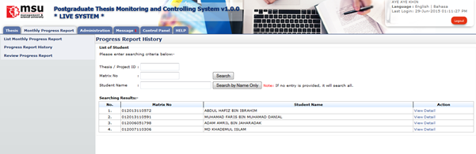
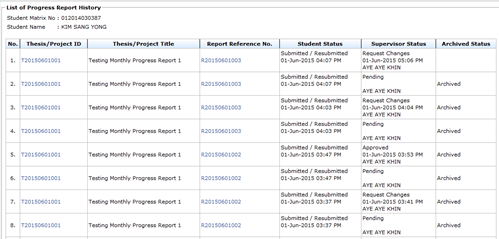
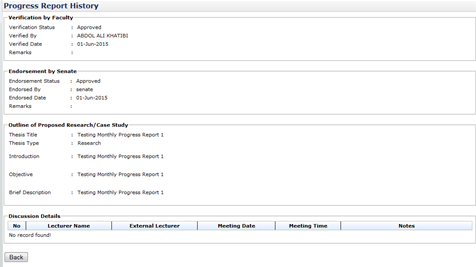
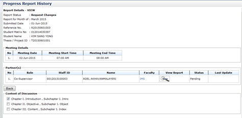

Progress Report History

Figure 23: Monthly Progress Report
Pre-condition
- Accept senate invitation as Supervisor
- Supervisee has submitted monthly progress report
Post-condition
- Can view progress report history
- Can review progress report
Steps:-
- Click on the Monthly Progress Report tab on the Top panel
- Click on the Progress Report History menu on the Left panel
- System will display list of supervisee assigned
- To view list of monthly progress report history, click View Detail link on the Action column (refer figure 1) Refer View Detail
View Detail

Figure 24: List of Progress Report History
Steps:-
- The list of progress report history will be display
- To view thesis detail, click on the link at thesis/project id column(refer figure 2)
- To view progress report detail, click on the link at Report Reference No. column (refer figure 2)

Figure 25: Thesis Detail
Steps:-
- The system will display thesis detail only
- Click Back button to go to previous page.

Figure 26: Progress Report History Detail
Steps:-
- The system will display progress report detail only
- Click Back button to go to previous page.
Created with the Personal Edition of HelpNDoc: iPhone web sites made easy